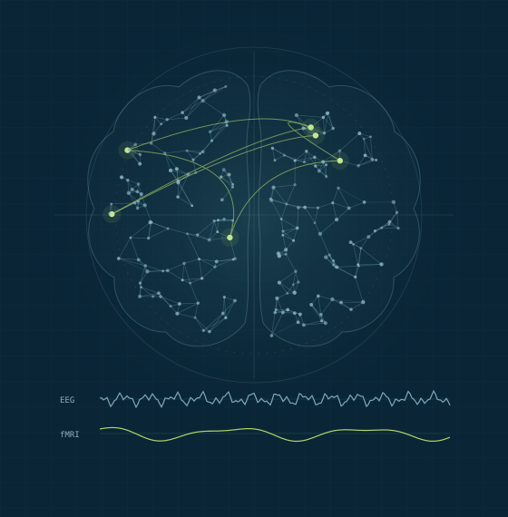

01 / DECODE
Multimodal AI
Bringing EEG and fMRI together through machine learning. We investigate cross-modal prediction and foundation models to connect the temporal and spatial views of brain activity.
Explore related workYury Koush Lab · Skoltech
Understanding brain networks through multimodal imaging, machine learning, and real-time neurofeedback.

Neuroimaging and Cognitive Neuroscience Laboratory
Vladimir Zelman Center for Neurobiology and Brain Rehabilitation
Our research
We connect computational methods with cognitive neuroscience to study brain function in health and disease.
Bringing EEG and fMRI together through machine learning. We investigate cross-modal prediction and foundation models to connect the temporal and spatial views of brain activity.
Explore related workDeveloping tools to measure and feed back brain activity in real time. Our work spans OpenNFT software, closed-loop experiments, and research into rehabilitation applications.
Discover our toolsStudying the brain networks behind emotion regulation, social perception, and behavior. We use functional imaging and connectivity analysis to understand how these systems interact.
Read our publicationsSelected publications
5 publications.
Stroke2026
EMA4MICCAI2026
MICCAI2025
PNAS2025
iScience2025
Open science
Open-source software for reproducible real-time neuroimaging and neurofeedback experiments.
An integrated environment for real-time fMRI neurofeedback training and automated quality assessment. Built for flexible experimental workflows.
A Python framework for real-time fMRI and EEG-informed neurofeedback, with modular processing and machine-learning prediction of fMRI signals from EEG.
The people behind the research
Bringing together expertise in neuroimaging, cognitive neuroscience, and computational methods.

Principal Investigator · Associate Professor
Yury leads the Neuroimaging and Cognitive Neuroscience Laboratory at Skoltech. His research focuses on real-time functional MRI, neurofeedback, and multimodal neuroimaging connectivity analysis.

PhD Student
Deep learning, foundation models, generative AI

PhD Student
Virtual reality, cognitive neuroscience

PhD Student
EEG, cognitive neuroscience

PhD Student
Human genetics, AI, functional neuroimaging
Lab notes
Research updates, publications, and life in the lab.
A feasibility trial co-authored by Yury Koush is published in Stroke, investigating real-time fMRI neurofeedback for reading deficits after stroke.
Read the paperThe EMA4MICCAI 2025 workshop paper co-authored by Ekaterina Antipushina introduces an optimal-transport framework for mapping EEG to cortical signals.
Read the paperOur open-source Python framework brings real-time fMRI processing and EEG-informed prediction into a modular neurofeedback workflow.
Paper and codeYury Koush and collaborators study how insula–premotor interactions connect affective states and action vitality forms.
Read the paperElizaveta Cherkasskaya and Raphael Dering join the laboratory.
Meet the teamDmitry Bezmaternykh, Yury Koush, and collaborators investigate the role of the ventrolateral prefrontal cortex in positive social emotion upregulation.
Read the paperJoin the conversation
We welcome motivated students interested in neuroimaging, machine learning, and cognitive neuroscience. Get in touch to discuss research interests and potential projects.
Contact the labFind us at Skoltech
Vladimir Zelman Center for Neurobiology